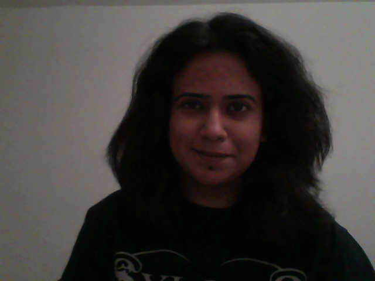
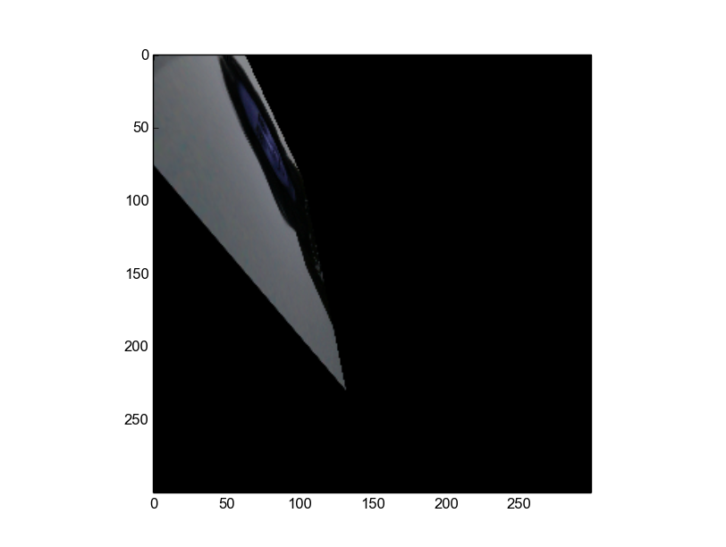
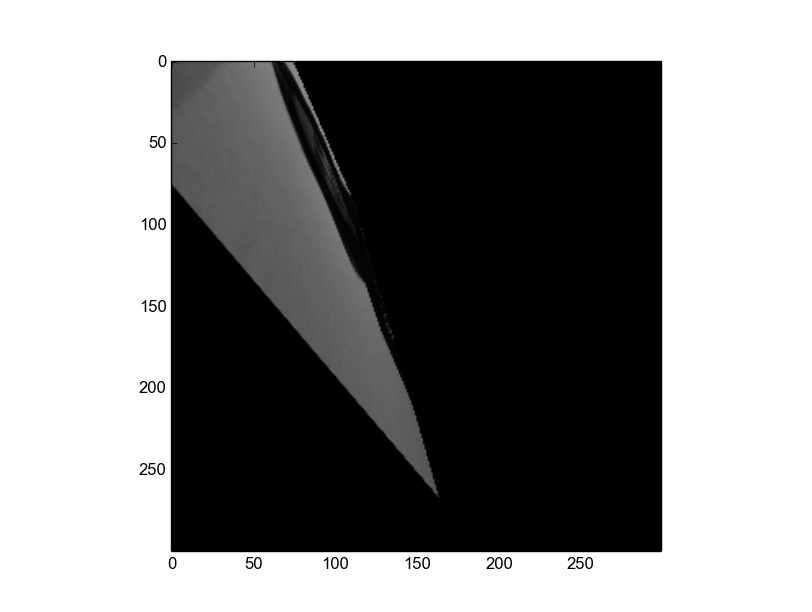
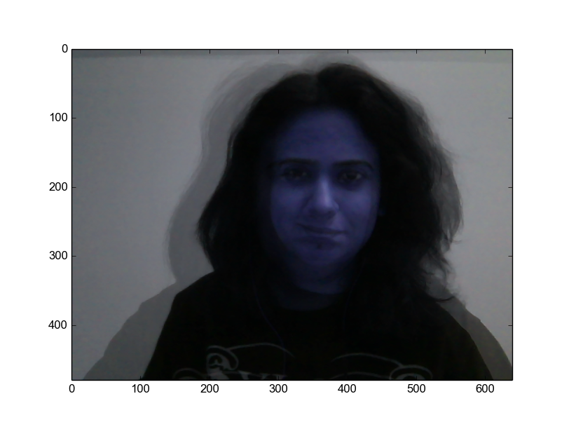

Bhavika Tekwani
Technologist, also human.
CS682: Computer Vision (Spring 2018)
Assignment 1
Code| 1. Take a picture and convert it to grayscale. |  | ||
| 2. Transformations | Switch colorspaces |  |
|
| Perspective Transformation |  |  | |
| Averaging | |||
| Median Blurring | |||
| Blending |  | ||